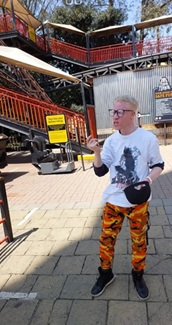

Katleho Selwana
About Me
Hi! I'm Katleho Selwana, a passionate web development student currently enrolled in WDD 131. I’m learning how to create dynamic, responsive, and accessible web pages using HTML, CSS, and JavaScript.
I enjoy exploring new technologies, solving problems, and building creative projects that bring ideas to life!
My Interests


When I’m not coding, I love listening to Amapiano music, learning about software engineering, and creating small web apps that solve everyday problems.
My long-term goal is to become a full-stack software engineer and build scalable apps that make a real impact in my community.